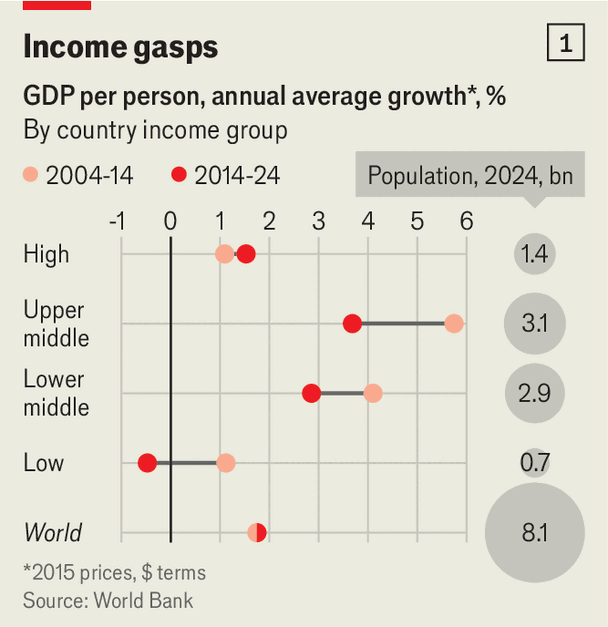

The GDP-per-person slowdown threatens global living standards
Brazil, China, Germany and Russia have recently joined an unfortunate club
Sep 17th 2026
AN UNFORTUNATE CLUB of countries is gaining new members. China, the world’s second-biggest economic power, and Russia, the most belligerent one, have joined. So have Germany, a far richer big economy, and Brazil, which may soon export more farm products than America. Some 3.3bn people, or more than two in five humans, now live in places where GDP per person grew half as fast or less in the decade to 2024 than in the previous ten years. In 2014 the figure was 1.1bn, or fewer than one in six people. Over 730m are experiencing outright declines in economists’ favourite gauge of living standards.
Some places continue to grow richer. The average resident of these lucky locales saw their real income grow by 38% between 2014 and 2024. Nearly half of that was thanks to the improving lot of 1.5bn Indians, whose economy is catching up with well-off places as birth rates fall. America, which continues to outperform the rest of the rich world, has pushed up the average for high-income countries (see chart 1).

But the number of countries and territories in the low- or no-growth club has risen from 68 in 2014 to 80 in 2024. They range from rich Canada to the dirt-poor Democratic Republic of Congo; their problems from demography to economic mismanagement. All face some of the same risks. A stagnating standard of living, let alone a declining one, undermines the assumption which has for decades dictated how people approach work and politics: that they will be better off than their parents (see chart 2, top panel). In countries where young adults who have grown up in the slowdown era are coming of age, it is already remaking society and rewriting the social contract.
In the rich world, the slowdown is often due to a combination of low productivity growth and high immigration. New arrivals may in time revitalise the economy, but any short-term boost to GDP is small. And because unproductive firms are less profitable, they pay less in tax. Where productivity growth is weak and migrants are welcome, thinner budgets are spread more thinly across more people. The result is that individuals feel hard done by.
German productivity barely budged in 2014-24, while the country accepted migrants from places like Syria. The average German’s real income rose by 0.6% a year. In the previous decade the figure was 1.5%—the global financial crisis of 2007-09 and the near implosion of the euro zone in the next few years notwithstanding. In Canada, where population is outpacing GDP, unemployment rose by nearly a percentage point in 2024, mostly because new arrivals were expanding the labour force.

Many resource-rich developing countries, meanwhile, have yet to recover from the end in 2014 of a spectacular commodities boom. Income gains in export-led success stories such as Uruguay and Chile have since nearly ground to a halt. The average Latin American is barely richer than a decade ago. South of the Sahel, people are 3.4% poorer. GDP per person in Angola, which exports lots of oil and diamonds, has shrunk by a quarter.
The fortunes of a few particularly populous emerging economies have deteriorated. In September 2006 the foreign ministers of Brazil, Russia, India and China met for the first gathering of the BRICs group of fast-growing developing giants. Since then only India has escaped the slowdown. Chinese GDP per person grew half as fast in 2014-24 as it did in 2004-14. The euphoria of manufacturing-led catch-up growth has given way to weak domestic demand. In Russia, per-person improvements are less than half what they used to be, despite a declining denominator because of a shrinking population.
The consequences of these shifts will be profound. Views on material progress shape who gets elected (in places with elections), as well as who works hard and how many children are born (everywhere). In 2006 Benjamin Friedman of Harvard University argued that rising living standards fostered stable politics, meritocracy and other virtues. Slowdowns may have the opposite result, especially among those at an early stage of their economic life.
One effect is nostalgia. In 2025 Justin Gest of George Mason University and his co-authors polled 20,000 Europeans. At least two-fifths believed their generation was economically disadvantaged. Only those in their 50s were more susceptible than 18- to 34-year-olds to this “nostalgic deprivation”. Similarly, a poll of Chinese born roughly between 1995 and 2010 by Oliver Wyman, a consultancy, found that 56% were worried about prospects for a better life. Earlier generations were more upbeat: according to a survey by Pew Research in 2015, 70% of those born in the late 1980s felt positively about the economy.
Nostalgia leads to disengagement. One poll of Russians aged 18-34 found that, though most had a strong sense of national identity, only 5% would consider working for the government. A ten-yearly survey in China conducted by researchers from Stanford University found that in 2023 only 28% of Chinese believed hard work was always rewarded, down from 62% in 2014. Eva Zhou, a 50-year-old mother in Beijing, says that her son “feels like there is no point in doing anything”. He recently dropped out of university, where he was pursuing an engineering degree. With unemployment among the urban young at 18% in July, little wonder. Lu Yao of Columbia University and Li Xiaoguang of Xi’an Jiaotong University have found that roughly two-fifths of jobless 23- to 28-year-old Chinese have university degrees.
In places that are not as repressive as communist China or revanchist Russia, young people’s professional apathy can go hand in hand with political ague. Mr Gest and his co-authors find that western Europeans in the throes of “nostalgic deprivation” are 55 percentage points more likely to vote for populists than those who report no such views.
Research by Ruth Dassonneville of KU Leuven, a Belgian university, shows that slowing growth can lead to volatile politics. Voters swing from left to right and back, as they blame incumbents for things getting worse. Brazilians aged 16-34 helped elect Luiz Inácio Lula da Silva, a left-winger, as president in 2022. Amid stagnating living standards, they are likelier to back his right-wing rival in elections next month. Instability is unlikely to promote growth, provoking more instability—and so on. In another ten years’ time more places may face a similar vicious cycle. ■